Getting started with the BRT Editor
To use the BRT editor, you first need to create a better rule tile container.
- Go to the project window, right click, and navigate to
Create/2D/Tiles/Better Rule Tile Container
After this is done, you can simply double click on the newly created container asset to open and edit it in the Better Rule Tiles Editor window.
The BRT Editor
The Better Rule Tiles Editor window is the place where the magic happens. When you open an editor window the first things you’ll see are:
- The grid
- The toolbar
- The tile drawer
- And the Sprite drawer
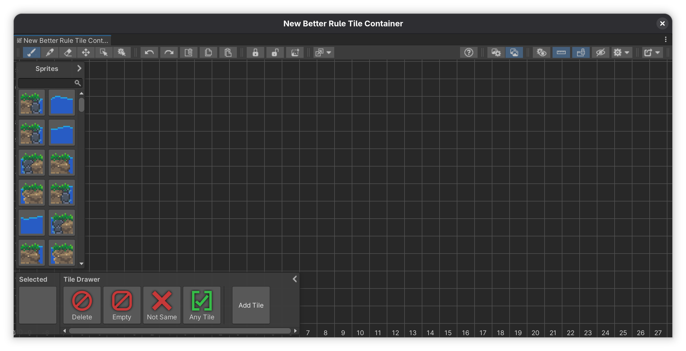
Setting things up
The first thing you’ll want to do before making any rule tiles is to change the grid type. The default grid type is square, so if you want to work on square tiles, you’re all set. But if you want to use isometric or hexagonal tiles, you’ll have to change it first. This step is important because once you’ve exported your first tiles, you won’t be able to switch between grid types.
Once you’ve settled on the grid type, you can start importing sprites and creating tiles.
Adding sprites to the editor
To add sprites, you just simply drag and drop them from the project window to the editor. You can select one or multiple sprites, but the sprites have to be part of the same image file (sliced image). If they’re in a separate file, you have to add them separately too.
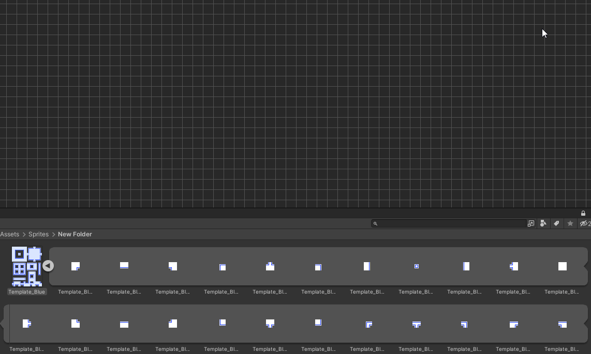
When you drag and drop sprites, they’ll get added in a square pattern, but if you drop in the sliced image, the sprites will keep their layout from the image.
Alternatively you can also drag the sprites directly to the sprite drawer or the sprite override settings window. This way you can add the sprites to the editor without needing to place the sprites somewhere and cluttering the grid with unused sprites.
Creating tiles
After you’ve added all of the sprites you want to use, you’ll also have to create tiles. Head to the tile drawer window inside the editor and click on the Add Tile button. This tile will represent the actual tile that will be generated, and the one that you’ll be able to place into your scene.
Once you got both your tiles and sprites, you can start drawing the tiling rules. The process is very similar to how you’d do it with a regular rule tile, except it is displayed a bit differently. Head to the tiling rule page to learn how to create tiling rules using the BRT Editor.
Exporting the rule tiles
Once you’ve created tiling rules in the BRT Editor, you can export it to use them inside your scenes. Just head to the export options window by clicking the rightmost button in the toolbar, and click on Generate Tiles.

Once the tiles are done, the asset will be highlighted in the Unity project window, and you’ll find the exported tiles within the container asset. You can now use these tiles as you’d use any other tile. Add them to a tile palette and you can start using them in your scenes.
Grid
The grid is the heart of the tool. This is where you place tiles and sprites to create tiling rules.
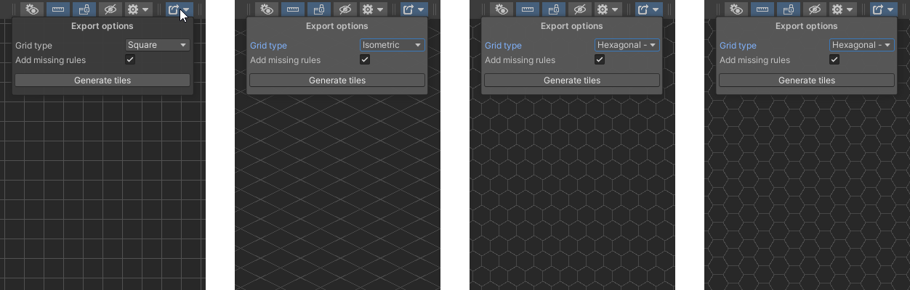
There are 3 different types of grids you can work in: Square, Isometric and Hexagonal, with the hexagonal grid having two variations: pointed topped and flat topped.
You can change the grid type in the export options window, which can be found in the most right side of the toolbar.
Info
It’s recommended to change the grid type before you start working on anything. After exporting the tiles you won’t be able to switch between incompatible grid types. You will still be able to switch between rectangular or isometric, but not to hexagonal.
Grid settings
You can further customize how the grid appears in the editor settings window. These options are especially useful if you’re using non-conventional sprites.
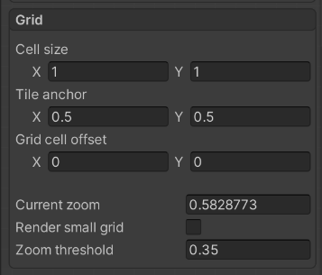
- Cell size - Specifies how large should one cell be compared to the unit size. Only affects sprites.
- Tile size - Specifies the size of the preview tiles inside the editor, compared to the unit size.
- Sprite anchor - Anchoring position of the sprites, acts the same as the setting in the Tilemap component
- Grid cell offset - Rendering offset for both sprites and tiles, specified in grid units.
- Current zoom - The current zoom value of the editor.
- Render small grid - This option decides whether the grid lines should keep rendering when zoomed out by a large amount. Setting this option to disabled will help seeing the tiles better when zoomed out, and will also help with performance as the grid won’t need to render a bunch of lines.
- Zoom threshold - If the
render small gridoption is disabled, the grid will stop rendering when the current zoom amount goes below this value.
Tile drawer
The tile drawer is the place where you can create and select tiles to use. On top of that, this is also the place where you can see the currently selected tile or sprite which you can use to draw with the brush tool.
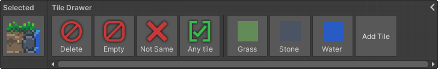
Tiles inside the editor represent the actual tiles which will be generated, and the ones that you’ll be able to place into your game.
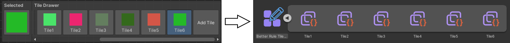
To create a tile just simply click on the “Add Tile” button in the drawer. The settings of the tiles you create can be changed in the tile inspector window. When selecting a tile from the drawer which can be edited, the tile inspector will automatically show up in the bottom left corner of the editor window.
Rules
Inside the tile drawer, you’ll see a few default tiles, called rules. You will need to use these to create tiling rules that will determine how the tile will behave when placing it on the tilemap.
Info
When using a rule tile, it’ll check all neighboring positions and compare the rule there to the rule of that position. That tiling rule will be selected where all positions pass the rules.
You can read more about how rules work on the Tiling rule page.
These default rules are:
- Delete - It’s a rule that removes every other rule or tile. This is the tile you need to use to erase tiles from the grid using the brush tool.
- Empty - When this rule is placed, the rule passes if there’s no tile in this position.
- Not same - When this rule is place, the rule passes if the tile at this position is not the same as the tile which is checking.
- Any - This rule will pass if there’s any tile placed at this position.
Tile drawer options
In the editor settings window, you can change the following settings for the tile drawer:
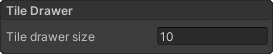
- Tile drawer size - this option changes the width of the tile drawer, the number specified is the amount of tiles visible at once in the drawer.
Sprite drawer
Located on the left side of the BRT Editor, the sprite drawer gives you easy access to all of the sprites you’ve added to the grid or to the drawer itself. It lets you select sprites without needing to pick them from the grid using the picker tool.
Adding sprites to the drawer
You can add sprites to the sprite drawer in different ways:
- You can directly drag and drop sprites into the drawer. When adding sprites directly to the drawer you can select as many sprites or texture files as you want, all of them will be added to the drawer.
- The second way is to drop them directly to the grid. Every sprite that’s on the grid will be automatically added to the drawer. When dropping sprites to the grid directly, you can select multiple sprites, but only one texture file. As described in the Adding sprites to the editor section.
When reopening the editor, all of the sprites that you’ve added to the sprite drawer will be remembered by default. This behavior can be changed by disabling the Save sprite drawer setting in the Editor settings window. When disabled, only those sprites will be remembered which are placed down on the grid. Disabling this option can help if you’ve added a lot of sprites to the drawer and it takes a while to load.
Using the sprite drawer
Using the drawer is self explanatory, you just click a sprite in the drawer to select it. The selected sprite will be displayed on the left side of the tile drawer window. When picking a sprite, the brush tool will be selected automatically so you can start drawing immediately after picking a sprite.
You can also expand the window to show more sprites at once by clicking the small arrow in the top right corner of the window. With this button you can also collapse the window to its original size.
Sprite drawer settings
If you wish to customize the sprite drawer, the editor settings window contains a few settings to change the appearance of it.
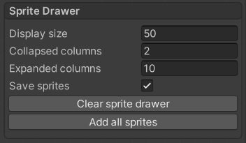
- Display size - Changes the size of the sprites in the sprite drawer.
- Collapsed columns - Sets the amount of columns visible in the sprite drawer when collapsed.
- Expanded columns - Specifies the amount of columns when the sprite drawer is expanded.
- Save sprites - If this option is enabled the sprite drawer will remember the tiles inside it when opening the editor again. If you have a lot of sprites enabling this option could cause the editor to load slower.
- Clear sprite drawer - Remove unused sprites from the sprite drawer, this will only take affect after you reload the editor window.
- Add all sprites - Finds all sprites in the asset database and adds it to the sprite drawer.
The toolbar
The toolbar is the row of buttons and toggles on top of the BRT Editor where you can access everything you need to use this tool. It’s divided into sections by horizontal double lines, so the different types of tools are separated into different groups.
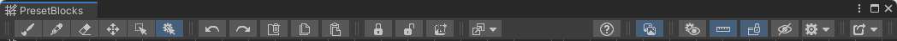
The toolbar groups from left to right are the following. On the left side of the toolbar:
- Editor tools
- Editor actions
- BRT Editor actions
- Automation tools On the right side of the toolbar:
- Extras
- Editor window toggles
- Settings group
- Export group
Editor actions
This group contains buttons to perform common actions in the editor window. These actions are usually executed using keyboard shortcuts, but are available here as well.
- Undo (Ctrl + Z) - Undoes your last action
- Redo (Ctrl + Y) - Redoes your last action
- Delete selection (Delete) - Deletes the area selected with the selection tool
- Copy (Ctrl + C) - Copies the currently area selected with the selection tool to the clipboard
- Paste (Ctrl + V) - Pastes the copied selection in. Pressing paste will show a preview of the area which you can move around with the move tool. After you’re ready to paste the selection in you can press Escape or switch tools to confirm the action. You can press Delete to cancel the action.
BRT Editor actions
This toolbar group contains buttons to perform actions specific to the BRT Editor. These also can be trigger by keyboard shortcuts.
- Lock selection (L) - Lock a selection to prevent it from accidentally editing it.
- Unlock selection (U) - Unlocks a locked selection.
- Create preset block (P) - Creates a preset block.
Automation tools
The last group on the left side of the toolbar contains tools that can help you get things done faster.
- Replace selection - Replace sprites and tiles in the selected area
Extras
This group contains miscellaneous buttons that do not fit in other groups.
- Open documentation - Opens the documentation website
Editor window toggles
In the next section you’ll see buttons that let you disable or enable floating windows inside the BRT Editor.
- Sprite toggle group - Only one of these can be active at a time:
- Sprite override settings - Toggles whether the sprite override settings window is visible or or. This button is only available if the option is enabled in the export options window.
- Sprite drawer - Toggles the visibility of the sprite drawer.
Settings group
This group of the toolbar contains various toggles to change how things are displayed on the grid.
- Highlight modified cells - Highlight cells modified by the Grid cell inspector with a flashing outline.
- Show coordinates - Show the grid coordinates on the side of the editor.
- Snap windows - Snap windows or allow them to be moved.
- Hide sprites - Hides the sprites so you can see what tile is under them.
- Editor settings dropdown - Opens the editor settings window where you can adjust more settings.
Export group
The last, and most important group on the toolbar is the export group, where you can open the export options window.
If the container asset you’re editing is using the tileset editor feature, then this is also the group where the button to switch between editors will appear.
Editor settings
The editor settings is the place where you can change the appearance and behavior of the BRT Editor and other windows inside it. These settings are separated into groups for better readability:
You can click on any of the links to read more about the specific options group. They are located under to their respective categories.
Export options
The export options contains every setting that’ll affect the output of the exported tiles, and is also the place when you can export them.
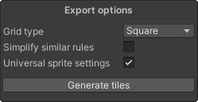
Grid type
This is the place where you can change the type of the grid. You can choose between square (which is the default one), isometric, and two types of hexagonal grids. This setting can be changed even if you already have tiles on the grid, but it’ll relocate the grid cells, so it’s better to change this setting before you do anything in the editor. This setting also affects some default values when creating a new tile, as different tilemaps require different shaped tiles.
Simplify rules
This option affects how the rules will be generated. If this option is enabled, every Tiling rule that has the same output sprite will be combined into a single tiling rule. It’ll compare every of those tiling rules, and create one tiling rule that’s true for all of those scenarios. This will prevent unnecessary duplicate tiling rules. For this option to work as you’d like, you need to give it as much samples as possible, so it can filter through every scenario and choose the one that applies to all. You can look at he Examples provided with the package to see this option in action.
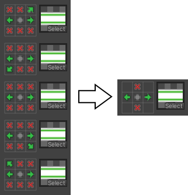
Universal sprite settings
If this option is disabled, you can use the Grid cell inspector tool to inspect a grid cell, and change it’s properties like output sprite, collider, animation and settings like this. But this means that if you have multiple tiling rules with the same sprite, those settings will not match. If universal sprite settings is enabled, these options from the Grid cell inspector will move to the Sprite override settings. In this window you can change the sprite output settings per sprite and not per tiling rule. If you change a sprites’ settings in this override settings window, every tiling rule that has the same sprite output will use the same sprite settings. You can open the Sprite override settings from the toolbar.
Treat similar tiles as same
With this option enabled, when setting up a tiling rule to a tile that is set up to automatically connect to other tiles, the automatically connected tiles will be treated as if it was that same tile in the tiling rules.
Here’s an example: We have 3 different tiles: dirt, grass and stone. The dirt tile is set up to connect to the grass tile, and the grass tile is set up to connect to the dirt tile. If we draw a tiling rule for the stone tile on the grid that makes the stone tile connect to the dirt tile, with this option enabled that tiling rule will connect to both the dirt and grass tile. If this option is disabled it’ll only connect to the dirt tile.
Generate tiles
Pressing this button will start the export process. After the process is done, the tiles will be saved to the container asset and the asset will be highlighted in the project window. The generated tiles will be saved into the container in order to keep them synced, and if you modify them and export them again, it will update the already existing tiles instead of creating new ones.